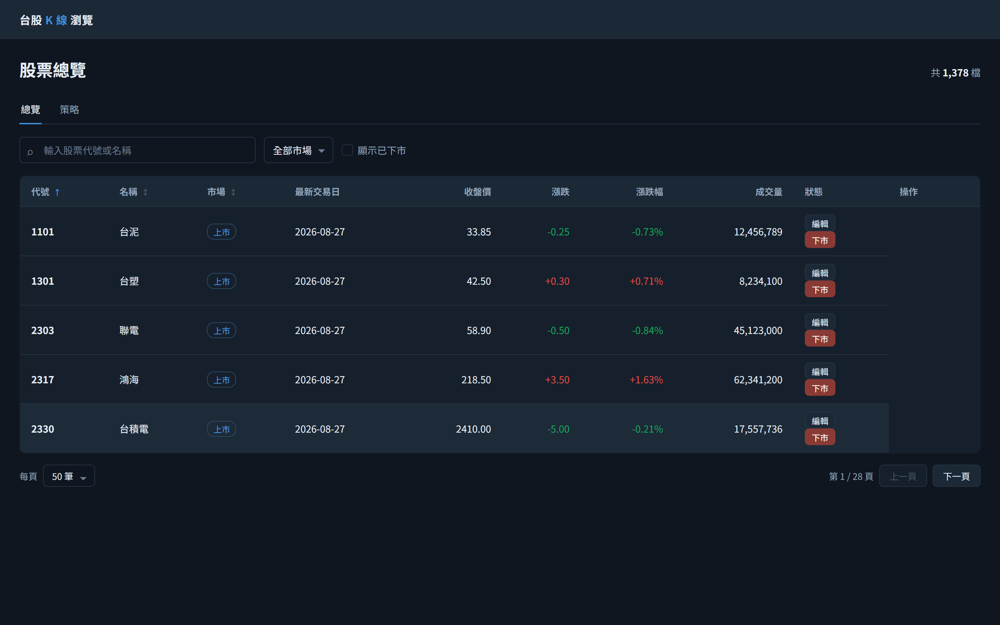
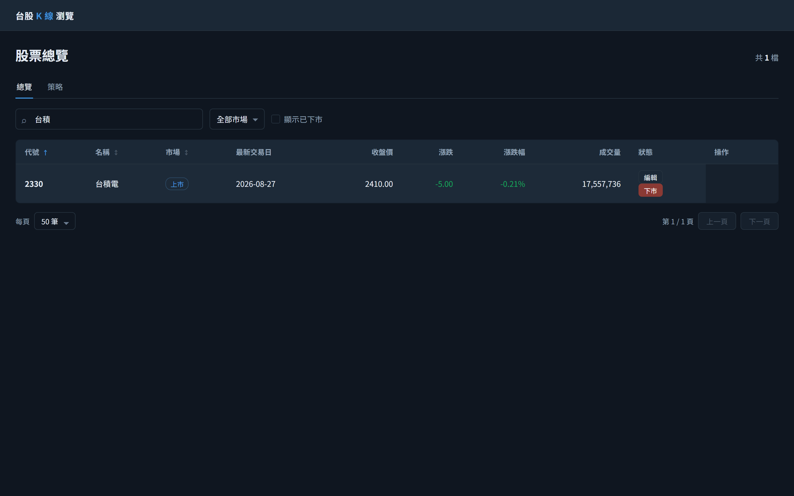
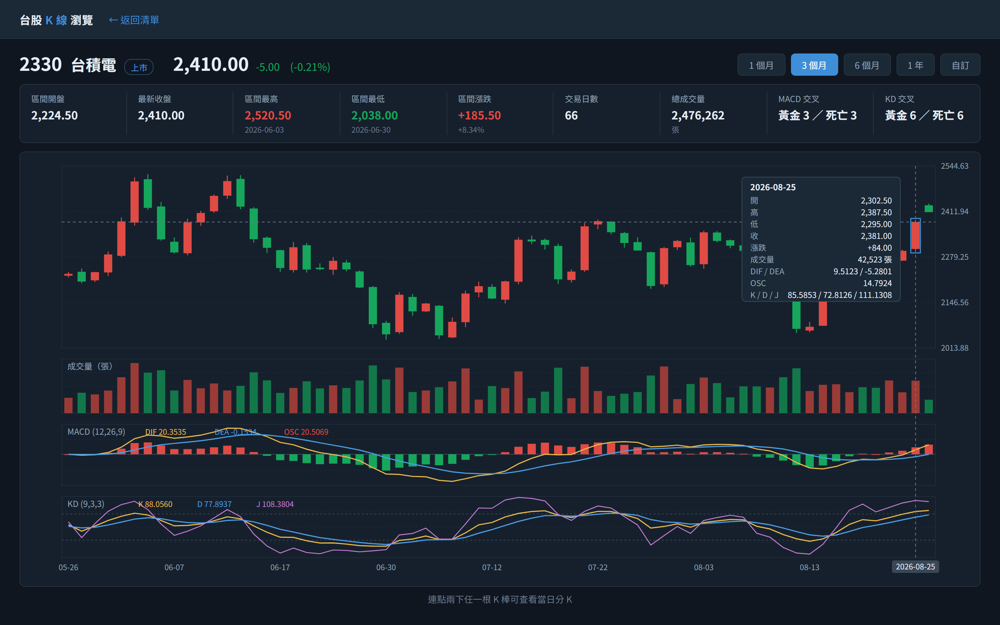
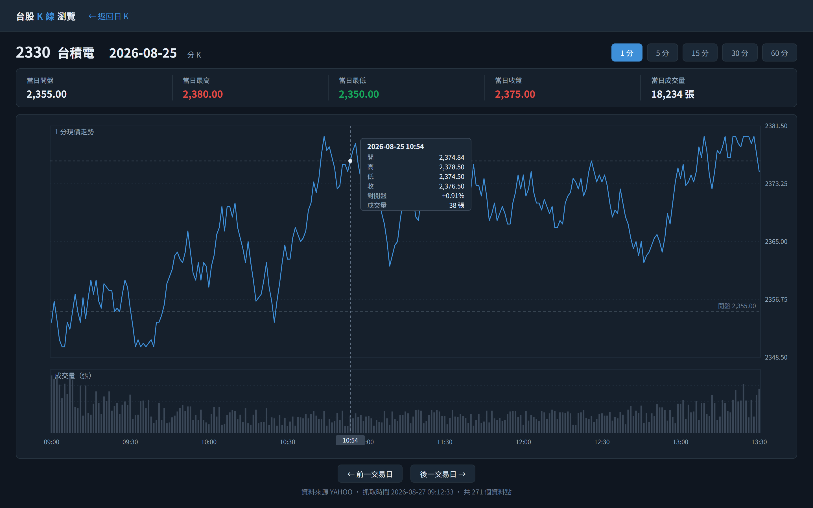
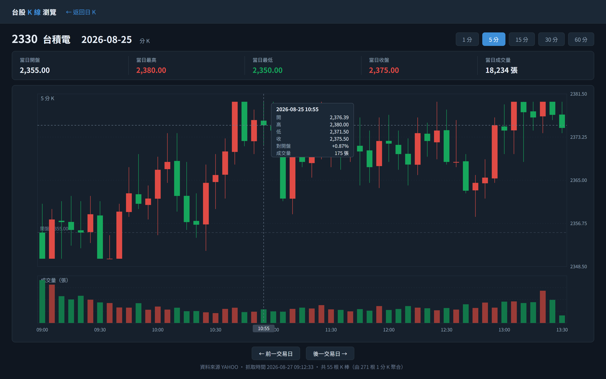

/api/stocks?keyword=&market=&includeInactive=&page=1&size=50&sort=&order=進頁載入第 1 頁清單
/api/stocks?keyword=台積&page=1&size=50以關鍵字重新查詢清單
/api/stocks/2330取頁首名稱、市場、最新收盤與漲跌/api/stocks/statistics?stockIds=2330&includeSeries=true&startDate=&endDate=取日 K 序列與 MACD／KD
/api/stocks/2330/minute-bars?tradeDate=2025-08-25&interval=1首次呼叫即向外部來源抓取該日分 K/api/stocks/statistics?stockIds=2330&includeSeries=true&startDate=&endDate=僅為取得相鄰交易日
/api/stocks/2330/minute-bars?tradeDate=2025-08-25&interval=5已抓過的日期直接讀庫，不再外抓